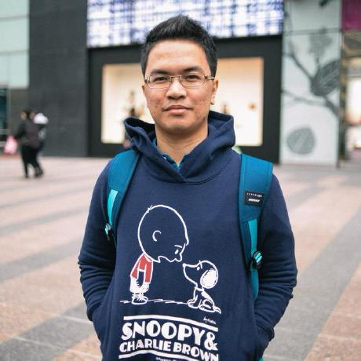
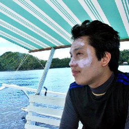

Speakers¶
Keynote Speakers¶

Stephen McDonald¶
Stephen McDonald is a software engineer who has worked in the web development space since the late 90s. He currently works for Google, and is the creator of Mezzanine, one of the most popular CMS projects for the Django framework.

Loïc Bistuer¶
Loïc currently works as a Solution Architect for the World Food Program. He’s also a core developer of Django. He discovered Django in 2008 shortly before the 1.0 release and has been hooked ever since. He contributes mostly to Django’s ORM and Form components. Loïc is originally from the South of France and currently lives in Bangkok, Thailand.
Speakers¶

Andrea Levinge¶
Andrea Levinge is the CTO of indie gaming company White Widget, which has just released a new mobile game titled “Face Mountain”. She has a degree in Computer Science from Ateneo de Manila and likes to develop, write and talk about all things software.

Mary Grace Coroza¶
Grace is an advocate of lean and agile software development for turning new ideas into successful business startups. Her current role as the CTO for Mayon Studios, Inc., leads the innovation process from conceptualization to implementation, developing cloud services for web and mobile applications.

Irene Crisologo¶
Irene is a Geologist-in-training with a Physics background doing research in Meteorology. When she is not processing the Doppler Radar images in Project NOAH, she may be outdoors, somewhere in the middle of nowhere.

Ronen Baram¶
With more than 20 years in the IT industry, Based in Melbourne Australia, managing a team of system engineers for Oracle MySQL in the Asia Pacific region. Has an extensive experience with large volume transaction systems in some of the biggest companies around the APAC region and Philippines.

Rex Mupas¶
Rex is currently the Sr. Director of Engineering of IntroMe, a social mobile application which connects people with common interests, with confidence. Prior to this, he had various leadership roles on system engineering and solutions architecture dealing with high traffic web sites and applications for various companies like ExploreTalent, Lazada, Zalora and US Auto Parts over the last decade. It’s his first time using Python as a backend.

Dhon Rocafort¶
Dhon, a Senior Software Engineer working on the Introme project, is a licensed Demandware Developer who worked on various eCommerce websites for the likes of P&G and StarBucks. He also worked as a PHP Developer for Rocket Internet and USAutoparts. He’s currently using Python in developing the Backend and APIs of Introme.

John Paul Mendoza¶
JP is a Sr. System Engineer, started in web and system development since early 2000. He is one responsible in the implementation of different features of IntroMe.
Juan Paolo Balbin¶
Jolo is a software developer and somewhat of a data scientist that is interested in NLP and machine learning. He’s also the creator of TextTeaser, an open source automatic summarization algorithm.
Conrad Miguel Gozalo¶
Mikko is some random college dropout from the Philippines. He pursued a career in IT, working mostly with startup companies.

Holden Hao¶
Holden Hao is a Linux Systems Administrator, Knowledge Management and IT Consultant. He has been deploying Plone-based solutions since 2004.
Jon Danao¶
Jon is the Head Honcho of The App Factory (http://theappfactory.io/), previously the Head of Technology for Innovations at ABS-CBN. He played lead guitars for a local band in Manila called Bridge. He is strong in blues, rock and roll, and showmanship. Terrible in second voice. He loves to cook and went to culinary school. He is strong in Asian cuisine and any food with patis (fish sauce) and chili.

Jervin Real¶
Jervin helps companies of all size be successful with their open source data infrastructure at Percona. Outside of work, he enjoys Yerba mate and funny videos on Youtube with his kids.

Dean Armada¶
Data Center Security Consultant specializing in proprietary and open source Data Center technologies such as SDN/OpenFlow, OpenStack, Linux Containers/Dockers and Python programming.

Chad Estioco¶
Chad loves kicking random things and making random things with the best programming language in the world.
Romer Kristi Aranas¶
RK is a geomatics engineer who loves code, comics, and cartography. He currently works for PHL-Microsat, the country’s microsatellite program. He organizes Maptime Diliman, a meetup group for mappers, in his spare time.


{kind=link}
{kind=link}
{kind=link}
{kind=link}
{kind=link}
Mark Steve Samson¶
Steve is a self-taught web developer and open source enthusiast who dreams of creating his own game someday. He’s been a pythonista for almost 5 years now and occasionally contributes to various open source projects.

{kind=link}
Daryl Yu¶
Daryl runs a small Python shop called We the Bourgeoisie and the Cebu Python user group PizzaPy. He does not enjoy referring to himself in the third person, but understands it’s the de facto practice for speaker bios.

Abhishek Tiwari¶
Abhishek Tiwari is Head of Data/Technology at Datalicious - a global big data analytics agency headquartered in Sydney with development center in Manila. Abhishek is passionate about blending Python with Cloud and Big Data.

Ray Diño¶
A Python and Django developer for 3 years. Currently exploring the world of data.
Community Panel¶

Earvin Gemenez, DurianPy¶
Earvin is one of the people who started a python community in Davao City named DurianPy and is also a co-founder of a mobile app named mealsprout. He loves to code, to eat, but most of the time to sleep.

Ed Patrick Tan, DurianPy¶
A Pythonista and Djangonaut at Ingenuity (http://www.ingenuity.ph). Loves kite flying, stargazing and everything related to Astronomy!

Arbin Bulaybulay, SugarPy¶
Arbin is a singer-songwriter turns Python developer since 2005. His day job is a Technical Lead in a number one award-winning BPO company in the country. Runs a small web shop Pysoldev in the night and builds his own startup. An active community leader for SugarPy.

Cristy Loraine Fuerzas, WaterPy¶
Christy has been using Python as backend for web development for over a year. She is still exploring the world of the language and is eager to learn more about it. She hopes to create more software using Python.
{kind=link}
Lionel Amarado, PyTsada¶
Lio is the founder of Innovuze Solutions which started back in 2013 with around 3 developers. After 2 years, it’s now a BPO company with more than 45 employees composed of developers, testers, content writers, SEO specialists, among others.

Matt Lebrun, ManilaPy¶
Matt is a Python/Django craftsman at Save22 and an advocate of Python PH. Loves teaching and learning.

Nadine Jamila, PyLadies Manila¶
Nadine is passionate about programming and skin-diving! She has a degree in Management Engineering in Ateneo, and fell in love with code in UP. She currently runs a small Python dev shop, and enjoys learning from and helping out people in the Python community!

Micaela Reyes, PyLadies Manila¶
Mickey is a Software Engineer at Freelancer.com. She’s a big fan of Dicta License and believes that life is indeed “more than just eating, breathing and accumulating”–it’s cheesy but there’s no point denying it. Lover of Open Source and all things Python. Advocate at Python.PH and PyLadies Manila.